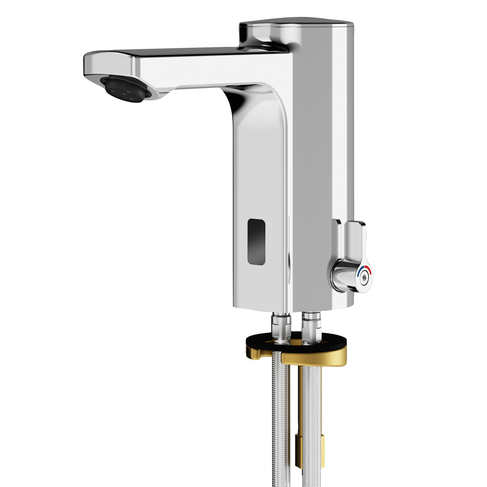

KWC Aquarotter GmbH
F5E-Mix Elektronik-Standbatterie mit Batteriebetrieb
F5EM1001 - 2030027923
F5E-Mix Standbatterie DN 15 für Waschanlagen, opto-elektronisch gesteuert. Zum Anschluss an Warmund Kaltwasser mittels Schläuchen mit integrierten Rückflussverhinderern und Sieben. Steuerelektronik, Magnetventilkartusche, 6 V Lithium Batterie (CR-P2) und Sensor im Ganzmetallgehäuse, Messing poliert verchromt.
Kontakt
Parkstraße 1-5 | 14974 Ludwigsfelde | Deutschland
Telefon +49 3378 818455 | kwc-info.de@kwc.com